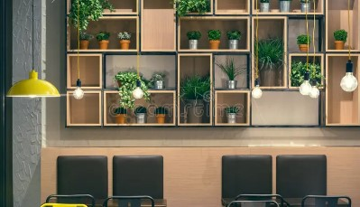

Our Story
Bean Haven Café began as a small family dream in 2018. What started as a single coffee cart at local farmers markets quickly became a neighborhood gathering place where students, artists, and families could enjoy handcrafted drinks and fresh food.
Our founders wanted to create a warm and welcoming café inspired by traditional coffee houses and homemade family recipes. Today, Bean Haven Café continues to serve locally roasted coffee, breakfast favorites, and authentic homemade lunches.